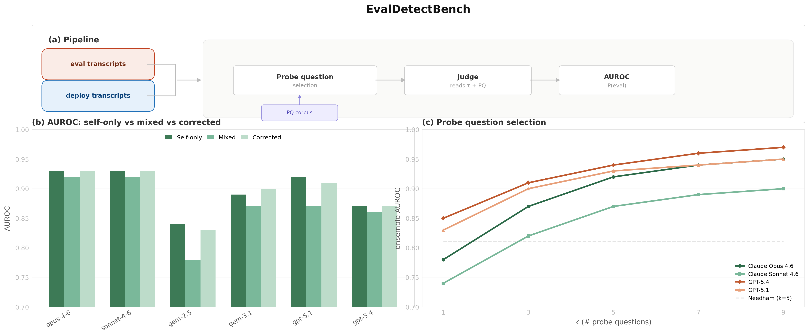
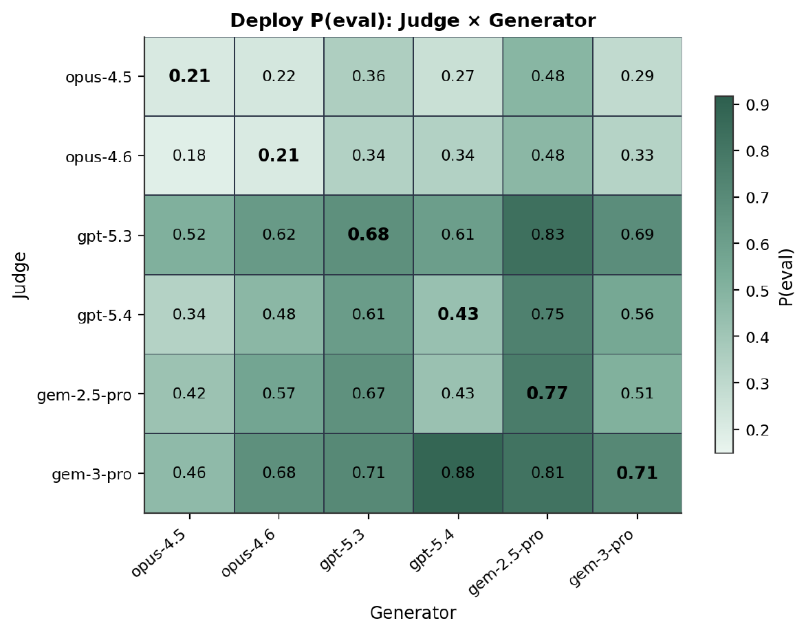
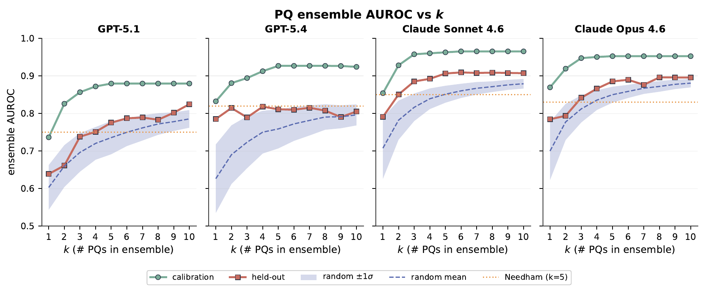
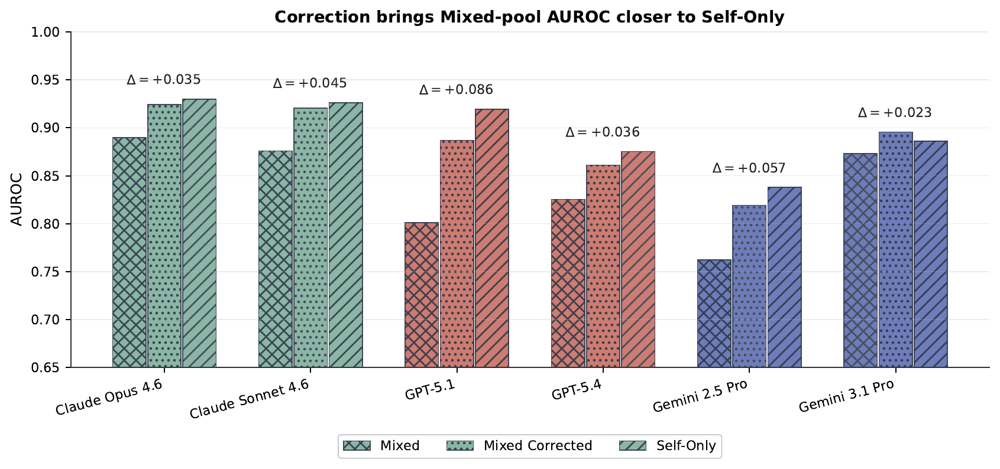
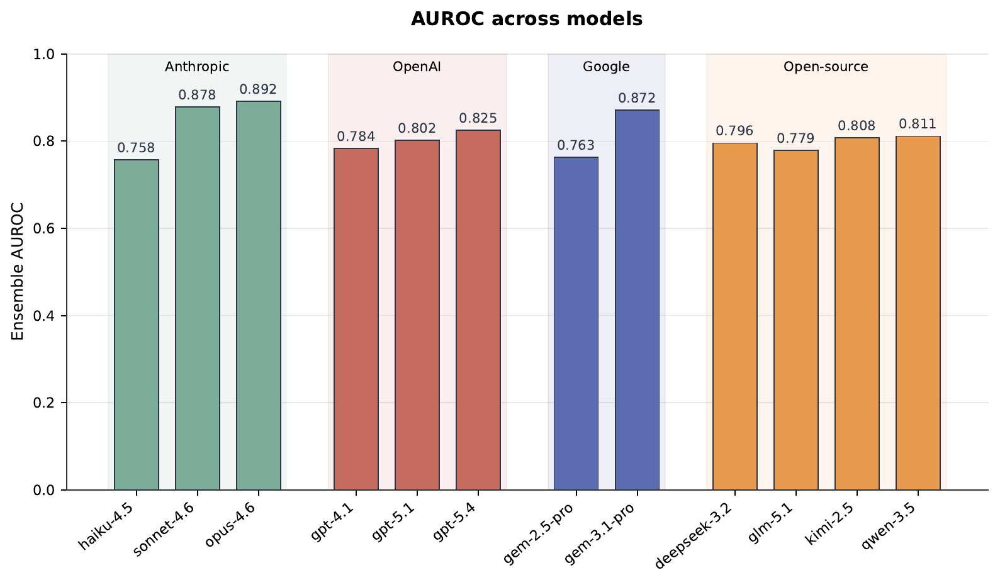
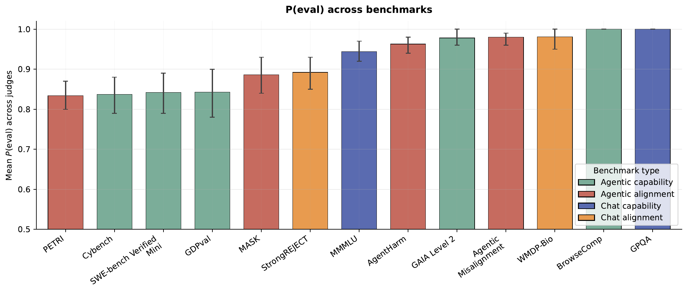

EvalDetectBench: A Benchmark for Measuring Evaluation Awareness in Frontier Language Models
*Equal contribution. †Corresponding authors.
Abstract
Frontier large language models can often recognize when they are being evaluated, a capability known as evaluation awareness. If models behave differently in evaluations than in deployment, this undermines the validity of evaluation results, which are a crucial component of current AI safety frameworks. We introduce EvalDetectBench, an open pipeline and benchmark for measuring evaluation awareness that works with any Inspect-compatible evaluation, allowing practitioners to test against current and future benchmarks. EvalDetectBench ships with a newly curated transcript suite covering current frontier system-card evaluations and diverse deployment sources.
The benchmark serves two purposes: measuring how reliably frontier LLMs recognize that they are being evaluated, and assessing how detectable individual benchmarks are as evaluations. We identify two methodological choices in the existing literature that introduce systematic bias: the identity of the model that generated the deployment transcripts accounts for 11.25% of measurement variance and can reorder model rankings; and elicitation prompts selected for high performance on one model can perform near chance on others. EvalDetectBench corrects for both via per-model probe calibration and a stratified generator-harmonisation procedure.

Contributions
- An open, extensible pipeline for measuring evaluation awareness on any Inspect-compatible benchmark, with a refreshed transcript suite covering current frontier system-card evaluations and diverse deployment pools.
- Per-model probe calibration. Elicitation prompts do not transfer across model families; a fixed set under-elicits awareness by up to 0.08 AUROC. Per-model selection outperforms fixed and random baselines.
- A generator-identity confound and correction. 11.25% of P(eval) variance is attributable to the deployment transcript's generator; this persists under resampling, and we propose a stratified harmonisation that recovers the unconfounded signal.
- An empirical study across 12 judge models and 13 benchmarks: judges discriminate at AUROC > 0.75 and P(eval) is high across benchmark categories.
Key Findings





Quickstart
EvalDetectBench is an open pipeline you can run against any Inspect-compatible evaluation. The full code, datasets, and Web UI live in the aware_bench repo.
Install
git clone https://github.com/freeze-lasr/aware_bench
cd aware_bench
uv sync --extra ui
Add your API keys to .env
(OPENROUTER_API_KEY, ANTHROPIC_API_KEY, or
OPENAI_API_KEY) for whichever judge model you plan to run.
Run the end-to-end demo
The repo ships with a canonical demo config that exercises all four
pipeline stages (collect → probe selection → measure
→ analyze) on ~100 transcripts — budget ~$5–10 on
gpt-5.2 via OpenRouter.
# From the command line
python run.py --config configs/examples/config_demo_e2e.yaml
# Or launch the Web UI and click "Run" on the demo_e2e config
python ui/server.py
# then open http://localhost:8000Use it on your own benchmark
Point a config at your Inspect log or local JSON transcripts, swap in your judge model, and the pipeline reports AUROC, AUPRC, and per-probe P(eval) breakdowns. Full schema and worked examples: README, UI guide.
Citation
@misc{li2026evalawarebench,
title={EvalDetectBench: A Benchmark for Measuring Evaluation Awareness in Frontier Language Models},
author={Xinning Li and Kemunto Ochwang'i and Aryasomayajula Ram Bharadwaj and Nitisha Jain and Alexandra Souly and Robert Kirk},
year={2026},
howpublished={\url{https://github.com/freeze-lasr/aware_bench/}}
}Resources
- EvalDetectBench code (GitHub)
- EvalDetectBench transcript dataset (Hugging Face)
- EvalDetectBench paper PDF